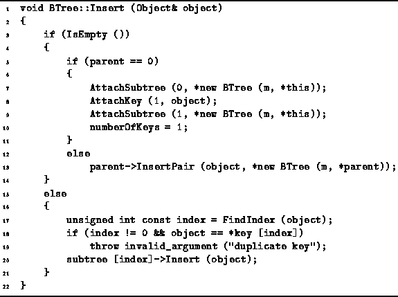
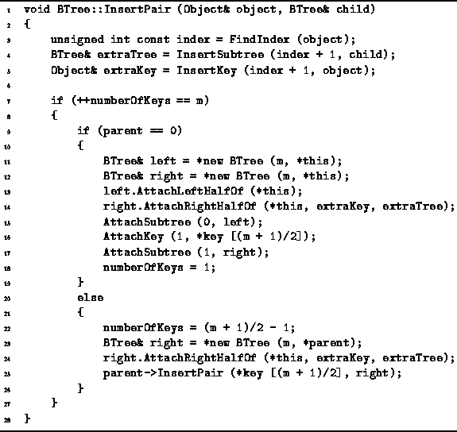
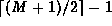
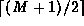
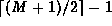
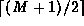

Data Structures and Algorithms
with Object-Oriented Design Patterns in C++
Data Structures and Algorithms
with Object-Oriented Design Patterns in C++
Insertion in a B-tree is a two-pass process.
The first pass moves down the tree from the root
in order to locate the leaf in which the insertion is to begin.
This part of the algorithm is quite similar to
the Find routine given in Program  .
The second pass moves from the bottom of the tree back up to the root,
splitting nodes and inserting them further up the tree as needed.
Program gives the code for the first (downward) pass
(member function Insert)
and the Program gives the code for the second (upward) pass
(member function InsertPair).
.
The second pass moves from the bottom of the tree back up to the root,
splitting nodes and inserting them further up the tree as needed.
Program gives the code for the first (downward) pass
(member function Insert)
and the Program gives the code for the second (upward) pass
(member function InsertPair).

Program: BTree Class Insert Member Function Definition
In the implementation shown,
the downward pass starts at the root node and descends the tree
until it arrives at an external node.
If the external node has no parent,
it must be the root and, therefore, the tree is empty.
In this case,
the root becomes an internal node containing a single key
and two empty subtrees (lines 7-10).
Otherwise, we have arrived at an external node in a non-empty tree
and the second pass begins by calling InsertPair
to insert the pair  in the parent.
in the parent.
The upward pass of the insertion algorithm is done by the
recursive InsertPair routine shown in Program .
The InsertPair routine takes two arguments.
The first, object, is a pointer to an Object instance
and the second, child, is a pointer to a BTree instance.
It is assumed that all the keys in child are strictly greater than
object.

Program: BTree Class InsertPair Member Function Definition
The InsertPair routine calls FindIndex to determine the position in the array of keys at which object should be inserted (line 3). It then calls InsertKey to insert the given key at the specified position in the array of keys (line 4). In the event that the array of keys is already full, i.e., when it contains M-1 items, the InsertKey function returns the key which falls off the right end of the array. This is assigned to extraKey.
The InsertSubtree function does a similar insertion (line 5). I.e., it inserts the child B-tree at the specified position. If the array of subtrees is full, which occurs if it already contains M subtrees, the InsertSubtree function returns the tree which falls of the right end of the array. This is assigned to extraTree.
If the numberOfKeys is equal to M, the node has overflowed and it is necessary to balance the B-tree. On the other hand, if the numberOfKeys is less than M, there is nothing more to do (line 7).
If the node overflows and it is the root,
then two new B-trees, left and right are created (lines 11-12).
The first  keys and
keys and  subtrees of the
given node are moved to the left tree by the AttachLeftHalfOf
function (line 13);
and the last  keys
and  subtrees of
the given node are moved to the right tree
by the AttachRightHalfOf function (line 14).
The left-over key is the one in the middle of the array,
i.e.,
subtrees of the
given node are moved to the left tree by the AttachLeftHalfOf
function (line 13);
and the last  keys
and  subtrees of
the given node are moved to the right tree
by the AttachRightHalfOf function (line 14).
The left-over key is the one in the middle of the array,
i.e.,  .
Finally, the root node is modified
so that it contains the two new subtrees
and the single left-over key (lines 15-18).
.
Finally, the root node is modified
so that it contains the two new subtrees
and the single left-over key (lines 15-18).
If the node overflows and it is not the root,
then one new B-tree is created, right (line 23).
The last keys
and subtrees of the
given node are moved to the left tree by the AttachRightHalfOf
function (line 24);
and the first  keys and
keys and  subtrees of
the given node remain attached to the given node.
Finally, the InsertPair routine calls itself recursively
to insert the left-over key,
subtrees of
the given node remain attached to the given node.
Finally, the InsertPair routine calls itself recursively
to insert the left-over key,  ,
and the new B-tree, right, into the parent of the given node (line 25).
It should now be clear why the parent member variable is needed.
,
and the new B-tree, right, into the parent of the given node (line 25).
It should now be clear why the parent member variable is needed.
 Copyright © 1997 by Bruno R. Preiss, P.Eng. All rights reserved.
Copyright © 1997 by Bruno R. Preiss, P.Eng. All rights reserved.